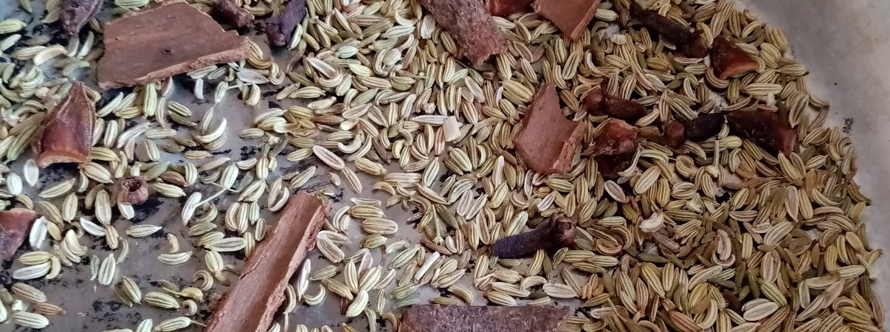

Chinese Five Spice Powder
 Vegetarian/Vegan
Vegetarian/Vegan

1star anise1 tbspwhole sichuan peppercorn1/4 stickcinnamon2 tspfennel seed4whole cloves1 sliceliquorice root, optional1/2 tspginger powder, optional
In a dry pan over a low flame toast the star anise, cinnamon, and clove for ~3-4 minutes, then add in the fennel and toast for another ~3 minutes.
Grind using a coffee/spice grinder or mortar. Pass through a fine mesh sieve.
Take the remaining coarse bits and grind those again. Then pass everything through the sieve again. Either discard the coarse bits, or save them for something like tea eggs to flavour the liquid.